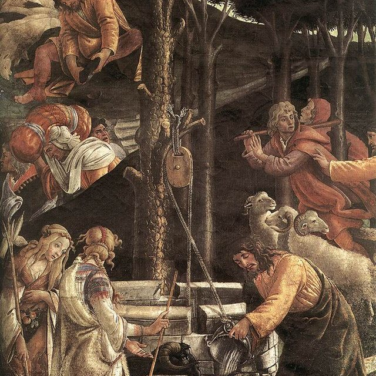

The Eclectic Polymath Podcast · Archive
#241 The Bible's Supporting Cast: The Minor Characters Who Move the Whole Story

About this episode
They get two verses, one sentence, sometimes no name at all — and the whole story turns on them. This episode is about the Bible's secondary characters: the midwives who lie to Pharaoh before Moses is born, the wife whose quick hands save Moses' life, the foreign priest who designs Israel's court system, and the captive child whose single sentence sets a general's healing in motion.
Key points
- the midwives who lie to Pharaoh before Moses is born, the wife whose quick hands save Moses' life, the foreign priest who designs Israel's court system, and the captive child whose single sentence sets a general's healing in motion.
- Zipporah and Jethro, Tamar and Rahab, Abigail talking David down from a massacre, Uriah closing out David's own hall of fame, Huldah authenticating the scroll that becomes scripture, Ebed-Melech going down into the pit for Jeremiah, Phoebe carrying the letter to the Romans
- and ask what "minor" even means in a book that rations its attention this carefully, why some pivotal figures are named and others deliberately aren't, and how the genealogy of Jesus keeps breaking its own pattern to name the outsiders.
- Then the documentation problem: how scholars actually recover people the text barely kept — garbled names resolved by Babylonian tablets, clay seals from Jeremiah's Jerusalem, and two thousand years of tradition expanding the silences.
- The minor characters were never missing from the Bible.
More like this
 #240 The Eras of Disney: From Snow White to Soul, and the Next Hundred YearsOctober 28, 202646:31
#240 The Eras of Disney: From Snow White to Soul, and the Next Hundred YearsOctober 28, 202646:31 #242 DreamWorks: The Studio Built to Beat DisneyOctober 28, 202655:24
#242 DreamWorks: The Studio Built to Beat DisneyOctober 28, 202655:24 #034: John Mbiti and the Debate Over African TimeMay 31, 202646:32
#034: John Mbiti and the Debate Over African TimeMay 31, 202646:32 #040: Peptides, GLP 1s, and the New Age of Body HackingJune 3, 20261:10:53
#040: Peptides, GLP 1s, and the New Age of Body HackingJune 3, 20261:10:53